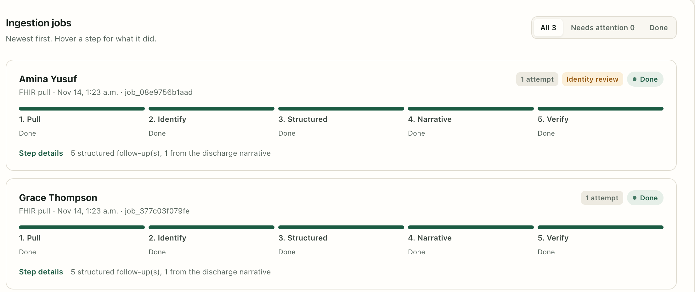
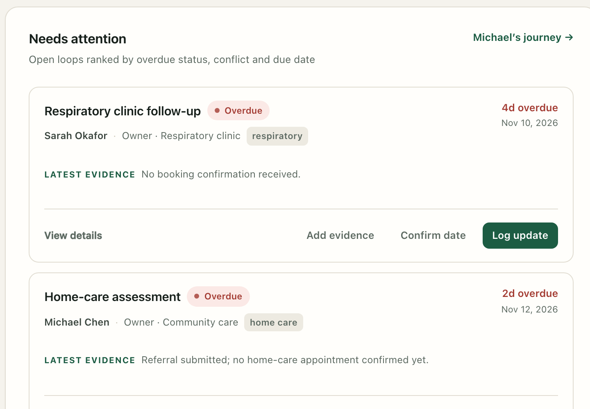
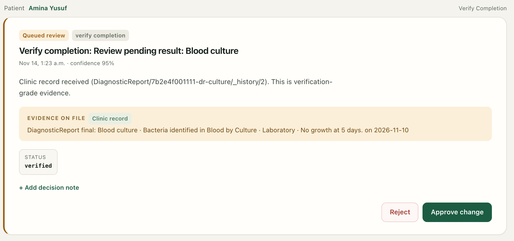

No proof, no closure
A follow-up closes when the EHR sends back a result or visit that points to its order ID, and a coordinator approves it. A patient saying “I went” is recorded as patient-reported. It does not close anything.
Follow-up tracking after hospital discharge
When a hospital discharges a patient, Continuum reads the hospital’s own orders: the cardiology referral, the bloodwork, the culture still in the lab. Each becomes a tracked item. An item closes only when a matching result or visit comes back from the EHR and a coordinator signs it off.
Synthetic patients. No account needed: choose “Explore as care coordinator”.
Michael Chen, 64
Discharged Nov 4 · St. Mary’s 5W · heart failure
Cardiology follow-up within 7 days
Clinic visit matched by order ID, signed off
ServiceRequest/sr-88213 → Encounter/enc-5521
Closed Nov 13
Basic metabolic panel
Result matched by order ID, signed off
ServiceRequest · lab
Closed Nov 8
Blood culture, pending at discharge
No growth at 48 h. Waiting for the final report
DiagnosticReport · preliminary
Result pending
Home-care assessment
Referral sent. No visit booked
Discharge summary, no order
2 days overdue
Medication review
Furosemide 40 → 80 mg, spironolactone added
MedicationRequest × 2
Open
Lab results and clinic visits come back days or weeks after discharge, often to a clinician who has moved on to other patients. Studies have counted how often they are missed.
of test results for hospital inpatients were never followed up, across the studies in a 2011 systematic review.
Callen et al., BMJ Quality & Safety, 2011of Medicare heart-failure patients saw a doctor within 7 days of discharge at the median hospital. Hospitals with more early follow-up had fewer readmissions within 30 days.
Hernandez et al., JAMA, 2010in Medicare readmission penalties were expected across 2,273 hospitals in fiscal year 2023.
Healthcare Dive, reporting KFF Health News, Oct 2022Screens below are from the running console with synthetic patients. The hospital side is a FHIR test server loaded with the same kind of record a real EHR returns.
1
An HL7 ADT^A03 arrives. Continuum pulls the stay over FHIR: orders, booked appointments, results still pending, new medications and the discharge summary. The job saves after each of its five steps.

2
Each referral, lab order and pending result becomes one item that keeps its order ID. The discharge summary is read only for what the orders missed, such as a home-care assessment, and those items are marked as read from text, to confirm.
3
It schedules check-in calls with the patient and creates tasks for the coordinator. Anything past its due date with no proof goes to the top of the list.

4
When a result or visit comes back that references the order ID, Continuum attaches it and queues one approval. The coordinator reads the evidence and approves or rejects it. Both are written to the audit log.

A follow-up closes when the EHR sends back a result or visit that points to its order ID, and a coordinator approves it. A patient saying “I went” is recorded as patient-reported. It does not close anything.
Each discharge runs as a job with five saved steps. If the process dies after step three, the restart begins at step four. It does not pull the record again or create the follow-ups twice.
Every call and task is written down before it goes out, then marked sent, then confirmed only when the expected proof arrives: a call transcript or the coordinator’s decision. An interrupted send is marked unknown and left for a person. It is never retried automatically.
When a hospital starts using an order code Continuum hasn’t seen, it looks for similar past orders with Atlas Vector Search, proposes a type, and asks a coordinator to confirm before creating the follow-up.
Continuum is an administrative tool. It tracks whether follow-up that clinicians already ordered took place. It does not diagnose, suggest treatment or change orders. Results that need a clinical read are assigned to the attending physician.
Every patient in the demo is synthetic. It was built for the MongoDB Agents in Context hackathon (problem 3, “Finish the job”) on MongoDB Atlas, LangGraph, FastAPI and React.
The demo opens the coordinator console with a synthetic caseload, its open follow-ups and the approvals waiting on them. On the sign-in page, choose “Explore as care coordinator”.
Open the coordinator demo